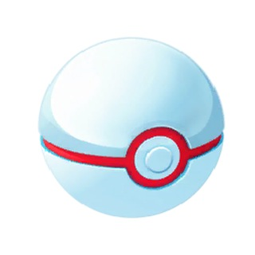
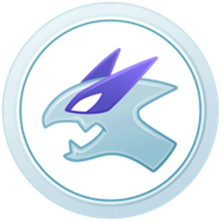
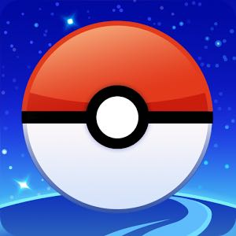
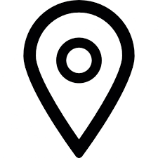

Um zur Liste mit allen anderen Raid Gruppen in der Umgebung zu kommen, hier klicken.
Die Raid Organisation von Friedrichshafen erfolgt über die Messenger App Telegram.
Im Terminkanal werden die Raids für Friedrichshafen organisiert. Im Moment läuft hier (@raidsFN) ein Bot um die Raids automatisch zur Abstimmung zu bringen.
Sollte dieser Bot oder die GoMap (aus welcher der Bot die Raid Daten bekommt) einmal ausfallen, haben wir nebenbei noch eine Sichtungsgruppe (@sichtungenFN) in der ihr, wie in der dort gepinnten Nachricht beschrieben, melden könnt wenn ein Raid (Level 3/4/5) auftaucht. Diese Meldung wird dann von einem Admin manuell im Terminkanal zur Abstimmung gebracht.
Falls man etwas zu einem Raid den anderen mitteilen will (z.B. dass man zu spät kommt oder ob nicht jemand früher kommen kann) oder ob man generell über allgemeine Themen, die PokémonGo betreffen reden will, ist die Labergruppe (@pogoFN) der Richtige Ort dafür.
Da der Bot auf der GoMap beruht, bezahlen wir hier im Gebiet gemeinsam für den Bereich Friedrichshafen. Um dies zu ermöglichen sammeln wir via PayPal oder vor Ort von jeder Person pro Monat (freiwillig) einen Euro ein. Eine Erklärung wie man spenden/bezahlen kann findet ihr hier (alles Transparent und für jeden einsehbar).
Als Anreiz zu bezahlen, bekommt jede Person, die für die Karte bezahlt, Zugang zum [Rare] Kanal, in dem seltene Pokémon die auf der Karte auftauchen automatisch gepostet werden.
Außerdem findet ihr hier auf der Seite noch Nachrichten, Tools und PokemonGo Youtube Kanäle, sowie Links zu anderen Raidgruppen in der Umgebung.
Auf ein erfolgreiches Raiden!
Terminkanal
Im Terminkanal werden die Raids für Friedrichshafen organisiert. Im Moment läuft hier (@raidsFN) ein Bot um die Raids automatisch zur Abstimmung zu bringen.
Solltet ihr mit mehreren Personen kommen, vergesst bitte nicht in der Abstimmung den +1 Button zu drücken. So ist die Warscheinlichkeit dass jemand anderes sich entscheide zu dem Raid auch zuzusagen höher.
Bitte vergesst auch nicht eure Stimme zurückzuziehen falls ihr nicht mehr zu dem Raid kommen könnt.
Zum Terminkanal: 
Alternativ: @raidsFN in Telegram oder: t.me/raidsFN
Sobald eine vollständige Sichtung ihren Weg in die Sichtungsgruppe gefunden hat, wird die Sichtung von einem Admin als Umfrage in die Termingruppe zur Abstimmung übertragen. Alle Mitglieder der Gruppen können an den Umfragen teilnehmen und zu der Zeit, zu der sie vor Ort sein können, abstimmen. Die Stimmen können durch klicken auf eine andere Uhrzeit geändert oder durch klicken auf die abgestimmte Uhrzeit zurückgezogen werden.
Sollte jemand mit weiteren Personen kommen, die nicht in der Gruppe abstimmen können, ist es empfehlenswert im Nicknamen am Ende ein (+x) zu ergänzen, wobei x der Zahl der weiteren Personen entspricht.
Im Moment sind wir genug Admins, um den Sichtungsmeldungen nachzukommen. Sollten mehr Admins benötigt werden, suchen wir uns selbst Verstärkung für das Team.
Sichtungsgruppe
(momentan außer Betrieb)
Um Sichtungen von Raids zu teilen und dadurch die Raids so gut wie möglich zu organisieren, haben wir eine Gruppe erstellt. Jedes Mitglied der Gruppe kann die Raids in seiner Nähe (vorzugsweise lvl 3 Machomai, lvl 4 und lvl 5) an denen er oder andere Interesse haben, teilen. Diese Raid-Sichtungen können dann von einem Admin zur Termingruppe übernommen werden.
Um die Erstellung bzw. Einstellung der Termine für die Admins möglichst einfach zu halten, ist es erforderlich die folgenden Informationen bei der Sichtung anzugeben: Pokémon, Arena, Enduhrzeit des Raids und ggf. GoogleMap-Link zur Arena. Bitte keine Screenshots!
So könnte eine Raid Sichtung aussehen:
Relaxo bis 18.30 Uhr an der Arena: "Der Blaue Elefant"
https://www.google.com/maps/?daddr=47.659309,9.484539"
Zur Sichtungsgruppe: 
Alternativ: @sichtungenFN in Telegram oder: t.me/sichtungenFN
Bitte alle Informationen in eine Nachricht packen. Wenn etwas korrigiert werden muss, eigene Nachricht antippen und auf bearbeiten drücken. Bitte keine zweite Nachricht senden, sondern die andere editieren.
Außerdem KEINE Screenshots und KEINE Audio Nachrichten.
Anleitung Google Maps Link bekommen:
- https://www.gomap.eu/karlsruhe aufrufen
- Arena suchen und diese anklicken
- "Get directions" gedrückt halten (oder Rechtsklick am PC)
- "Linkadresse kopieren"
- In die Sichtungsmeldung kopieren
Laber Gruppe
Zum Austausch über alles andere, was Pokémon Go angeht (Nachrichten, Fragen, Bugs, verspätet zu einem Raid kommen, usw.), haben wir noch eine Telegramgruppe eingerichtet, der ihr beitreten könnt. Hier könnt ihr Euch über alles austauschen, was nicht in die Termin- bzw. Sichtungsgruppe gehört.
Zur Laber Gruppe: 
Alternativ: @pogoFN in Telegram oder: t.me/pogoFN
GoMap (Karte)
Gemeinsam mit Mitgliedern der Gruppe haben wir für Friedrichshafen eine Karte organisiert, welche die Pokémon sowie Arenen und Raids anzeigt.
Um für die Karte zu spenden/zahlen bitte den gewünschten Betrag per PayPal (an Freunde und Bekannte) an die Folgende E-Mail Adresse senden: "pogoteamfn@gmx.de" (kein Link) und nicht vergessen als Verwendungszweck euren Nicknamen anzugeben.
Wenn ihr kein PayPal habt könnt ihr auch vor Ort das Geld Christopher (@WildChiliHead), Christoph (@Deluge23) oder Corbi (@pixma140) geben und das Geld wird von einem der dreien auf das Sammelkonto zur Bezahlung der GoMap eingezahlt.
Wenn ihr für die GoMap gezahlt/gespendet habt, meldet euch bitte bei einem Admin, damit wir euch in der folgenden Tabelle eintragen können. Zur Tabelle:

Wenn ihr schon dabei seid zu Spenden: Wenn ihr dem Ersteller des Raidbots auch noch etwas Geld zukommen lassen wollt, dann könnt ihr ebenso dieser Mail Adresse euren gewählten Betrag Spenden: "stuff@planetjahn.de" (Bitte auch an Freunde und Bekannte senden und mit Verwendungszweck: "Raids FN" versehen), danke.
Status und Updates zur Karte (vom Entwickler):
Zur Karte: 
Rare Kanal
(nur für GoMap Unterstützer)
Ein Telegramkanal der für alle Spieler offen ist, welche an der Bezahlung der GoMap mitmachen. Hier werden spawns von seltenen Pokémon innerhalb der GoMap ausgelesen und mit Standort und Zeitpunkt des despawns gepostet.
Der Zugang zu diesem Kanal erfolgt durch Einladung nach Zahlung. Wenn ihr für die Karte gezahlt habt, meldet euch bei einem Admin in Telegram. (@pixma140 oder @WildChiliHead)
Tools (Linkliste)
Hier eine Liste mit den wichtigsten Links für Pokémon Go Spieler:
- GoMap (Karte):
Link - GymHuntr (Karte):
Link - Beste Movesets für Pokemon finden (damit ihr wisst wofür ihr eure TMs nutzen könnt):
Link - Online IV Checker:
Link - IV Checker mit Screen Overlay (Android):
Link - IV Checker mit Screenshots (Android):
Link - IV Checker mit Screenshots (iOS):
Link - Kleines Trainerstatistik Tool (selbstgemacht):
Link
News
-
Demage Breakpoints:
YouTube
Spreadsheet dazu:
Reddit - SilphRoad:
Subreddit / Homepage (incl. Nestatlas uvm.)
YouTube
Raidgruppen Sammlung:
Hier eine Liste mit Links zu anderen Raid Gruppen um den Bodensee herum:
Telegram Gruppen
- Friedrichshafen:
Telegram (alternativ @raidsFN) und Telegram (alternativ @sichtungenFN) - Markdorf:
Sichtungen (alternativ @sichtungenMarkdorf) und Raids (alternativ @raidsMarkdorf) - Ravensburg:
Telegram (alternativ @epi_raid) - Konstanz + Umgebung:
Telegram (alternativ @KreuzlingenKonstanzRaidtermine) - Karlsruhe (Innenstadt):
Telegram (alternativ @raiderskarlsruhe) und Telegram (alternativ @Raidska) - Karlsruhe (Übersicht):
Website - Stuttgart:
Telegram (alternativ @raidersstuttgart)
Whatsapp Gruppen
- Überlingen:
Whatsapp - Konstanz:
Whatsapp - Bermatingen und Umgebung:
Whatsapp - Ravensburg:
Whatsapp - Tettnang:
Whatsapp (Raids) und Whatsapp (Labern) - Lindau:
Whatsapp - Leutkirch:
Whatsapp - Wangen:
Whatsapp - Allgäu/Bodensee (Laber Gruppe):
Whatsapp